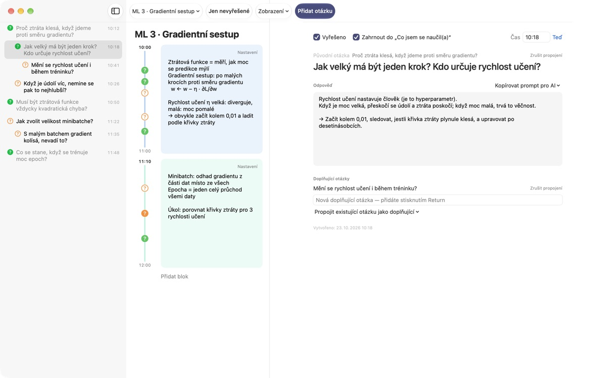
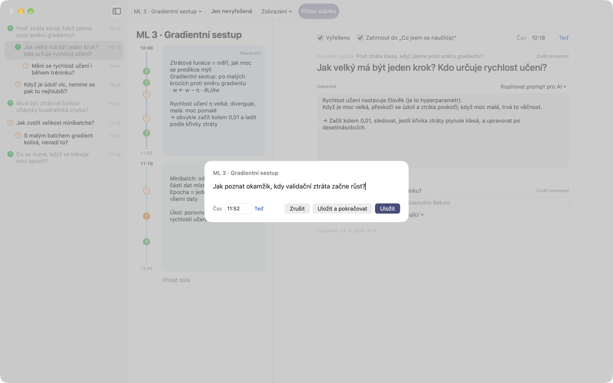
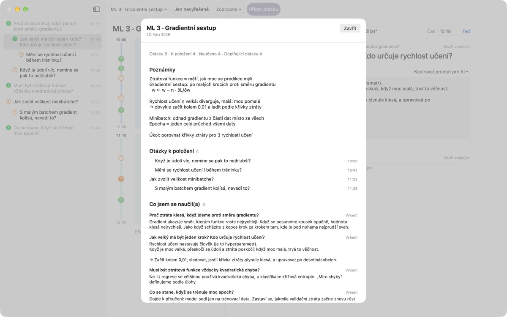
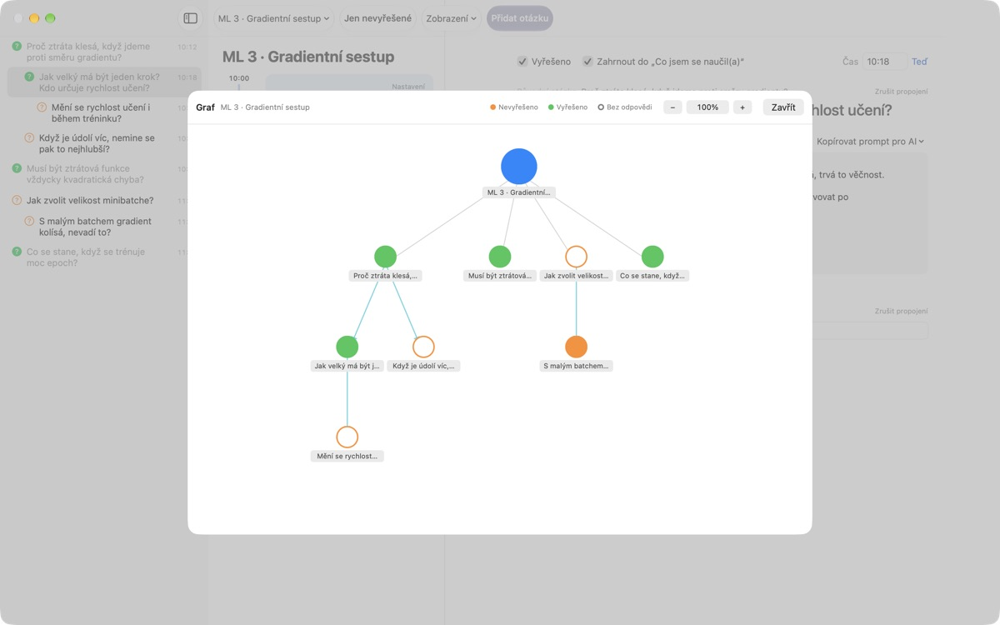

Už vám neuteče žádná
otázka z přednášky
Stiskněte ⌘⇧N, napište jeden řádek a otázka se uloží vedle poznámek z té přesné minuty. Posloucháte dál a odpověď hledáte později.
Pro macOS 14 nebo novější. Bez účtu, vše zůstává na tomto Macu.

Vyzkoušejte si to
Jste uprostřed přednášky o strojovém učení. Napište otázku a uložte ji: vedle bloku pro ten čas se objeví ?. Nastavte čas mimo bloky a vznikne pro ni nový blok.
Pamatujete si po přednášce ještě, na co jste se chtěli zeptat?
Sotva si pomyslíte „počkat, proč vlastně?“, přednášející už je u dalšího bodu. Otazník na okraji si nepamatuje, ke kterému vysvětlení patřil, a otázka zůstane bez odpovědi. LectureQ připne každou otázku k poznámkám z té chvíle a drží ji na očích, dokud ji nevyřešíte.
Ptejte se a neztraťte další větu
Okno pro zadání otevřete tlačítkem Přidat otázku na panelu nástrojů nebo zkratkou ⌘⇧N. Čas se vyplní sám. Return ukládá, ⌘Return uloží a rovnou připraví místo na další.
Každá otázka se zobrazí jako ? vedle svého časového bloku, takže později hned vidíte, ze které části přednášky pochází.

Vyřešené otázky se mění v naučené
Napište odpověď vlastními slovy, označte otázku jako vyřešenou a v souhrnu se přesune do Co jsem se naučil(a). Co je stále otevřené, zůstane v Otázky k položení, takže seznam na příští hodinu vznikne sám.Kopírovat prompt pro AI v detailu otázky vloží do schránky hotový prompt s názvem přednášky a poznámkami z té chvíle. Stačí ho vložit do AI služby, kterou už používáte.

Uvidíte, kam vaše myšlenky vedly
Doplňující otázky se řadí s odsazením pod otázku, ze které vzešly, a graf je spojuje šipkami. Kliknutím na uzel přejdete rovnou na otázku.
Ve Stavu učení si zapíšete, kde jste teď, kde chcete být na konci kurzu a co se chcete naučit, a můžete to porovnat.

Začátek ve třech krocích
- 1
Vytvořte přednášku
V nabídce přednášek vlevo na panelu nástrojů, nebo importujte rozhovor uložený v Markdownu.
- 2
Zapište ji hned
Stiskněte
⌘⇧N. Stačí jeden řádek, čas už je vyplněný. - 3
Odpovězte později
Napište odpověď a klikněte na ?, tím ji označíte jako vyřešenou. Přesune se do Co jsem se naučil(a).
Klávesové zkratky
- ⌘⇧N
- Přidat otázku
- Return
- Uložit
- ⌘Return
- Uložit a psát další
- Esc
- Zrušit
- ⌘1
- Souhrn: otázky k položení, co jste se naučili, poznámky
- ⌘2
- Graf: původní a doplňující otázky
- ⌘3
- Časové bloky: bloky všech přednášek v časovém pořadí
- ⌘4
- Stav učení
- ⌘+ · ⌘- · ⌘0
- Větší text, menší text, výchozí velikost
Všechny najdete i v nabídce Zobrazení.
Všechny funkce jsou zdarma
Zdarma
- Rychlé otázky a poznámky v časových blocích
- Doplňující otázky a graf
- Souhrn, přehled bloků a Stav učení
- Prompty pro AI v pěti krocích, zkopírované do schránky
- Import rozhovorů z Markdownu
Podpořte vývojáře
- Pokud vám aplikace pomáhá, pošlete malé spropitné z Nastavení
- Spropitné nic dalšího neodemyká
Se spropitným i bez něj funguje všechno stejně.
Žádné reklamy ani účet. Vaše poznámky zůstávají na tomto Macu.
Časté dotazy
Co znamenají barvy otazníku?
V seznamu je prázdný oranžový kroužek otázka, která ještě není vyřešená, a plný zelený vyřešená otázka. Kliknutím na ? přepnete stav a volbou Jen nevyřešené na panelu nástrojů uvidíte jen otevřené. U časového bloku barva ukazuje, zda je otázka vyřešená, a plný kroužek, že už má odpověď.
Jak fungují časové bloky?
Tlačítkem Přidat blok začne v tu chvíli nový blok a předchozí tam skončí. Když zapíšete otázku v čase, který nepokrývá žádný blok, vytvoří se kolem ní nový. Přes Nastavení vpravo nahoře v bloku změníte barvu, začátek a délku nebo blok smažete. Pokud blok smažete sami, ta přednáška přestane bloky vytvářet automaticky.
Jaký je rozdíl mezi „Vyřešeno“ a „Co jsem se naučil(a)“?
Když v detailu otázky zaškrtnete Vyřešeno, zvolíte také, zda se má počítat do Co jsem se naučil(a). Zobrazí se tam jen vyřešené otázky, které tam zahrnete. Odebrat nebo vrátit je můžete i ze souhrnu, odpověď přitom zůstane.
Jak fungují prompty pro AI?
V detailu otázky otevřete Kopírovat prompt pro AI vedle pole Odpověď a vyberte krok: Vylepšit otázku, Najít odpověď, Zpochybnit odpověď, Vytěžit doplňující otázky nebo Nechat ohodnotit mou odpověď. Do schránky se zkopíruje prompt s názvem přednášky, poznámkami z té chvíle, stavem učení a původní otázkou. Samotný text promptu je zatím v korejštině; většina AI služeb mu i tak rozumí a odpověď si můžete vyžádat česky. Pro ohodnocení odpovědi ji musíte nejdřív sami napsat. Aplikace se sama nikdy nepřipojuje k žádné AI službě.
Můžu importovat rozhovor uložený v Markdownu?
Vyberte Importovat z Markdownu… v nabídce přednášek. # Nadpis se stane názvem přednášky a v každé ## Sekci je první otázka původní a další jsou doplňující. Co v souboru říká první mluvčí, se stane otázkami, a co říkají ostatní, odpovědí na předchozí otázku. Původní soubor se nikdy nemění.
Jak smažu otázku nebo přednášku?
Klikněte na otázku v seznamu pravým tlačítkem a zvolte Smazat. Přednášku smažete volbou Smazat aktuální přednášku v nabídce přednášek; zmizí i její otázky a bloky. Nedá se to vrátit, proto si důležité věci nejdřív zálohujte.
Kde jsou moje data a jak je zálohovat?
Vše zůstává na tomto Macu a nikam se neodesílá. Ukončete aplikaci a zkopírujte celou složku ~/Library/Containers/com.lectureq.LectureQ/Data/Library/Application Support/LectureQ/ včetně souborů -wal a -shm. Aplikace posílá jen anonymní statistiky používání, například verzi a dny spuštění, nikdy to, co píšete.
Text je příliš malý.
⌘+ ho zvětší, ⌘- zmenší a ⌘0 vrátí výchozí velikost. Rozsah je 85 % až 200 % a nastavení se pamatuje.
Na kterých Macích aplikace funguje?
Na každém Macu s macOS 14 nebo novějším. Zdrojový kód je veřejně na GitHubu: M1zz/LectureQ.
Něco nefunguje. Komu to nahlásit?
Pošlete zpětnou vazbu z Nastavení aplikace (⌘,) nebo napište na adresu níže. Uveďte verzi macOS a co jste zrovna dělali, ať to můžeme prověřit rychleji.
Dotazy nebo připomínky? Napište na mizzking75@gmail.com.